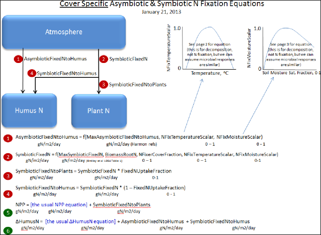
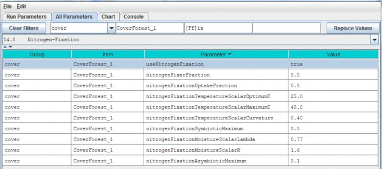

Nitrogen-Fixation
Nitrogen fixation is a process in which nitrogen (N2) in the atmosphere is converted
into ammonium (NH4). In biologicalsystems, N fixation can be carried out by free-living (asymbiotic) microorganisms, or by plant species that havea symbiotic relationship with N- fixing bacteria (Frankia and Rhizobia). Insymbiotic N fixation, plants provide carbohydrates as an energy source to bacteria that in turn supplyNH4 to the host plant.
Rates of symbiotic N fixation for soybeans, red alder and other species can sometimes exceed 100 kg ha-1yr-1, an amount similar to agricultural fertilizer applications. Rates for asymbiotic N fixers tend to bemuch lower - for example, <1 kg ha-1 yr-1in some PNW coniferous forests.
However, it is important to capture even small N additions, which are important for maintaining and evenincreasing ecosystem N stocks over successional time scales.
We added a nitrogen fixation subroutine to VELMA v2.0 that addresses symbiotic and asymbiotic fixation for anycover type (agricultural, grassland, forest, etc.)
The conceptual diagram below shows VELMA's modeled pools and fluxes. Note that parameter names in this diagram donot strictly follow those used in VELMA, but nonetheless convey the overall structure of the N fixationsubroutine.

Select "14.0 Nitrogen-Fixation" from the All Parameters drop-down menu to specify parameter values for asymbioticand symbiotic N fixation.

Parameter Definitions
| Parameter Name | Parameter Description |
|---|---|
| useNitrogenFixation | When using NitrogenFixation = false (default), no nitrogen fixation is computed for thiscells of this cover. When useNitrogenFixation = true, nitrogen fixation is computed using this cover's other nitrogen fixation parameters. |
| nitrogenFixerFraction | The fraction of a cell's plant matter (in the range [0.0 1.0]) that performs Nitrogenfixation. |
| nitrogenFixationUptakeFraction | The fraction (in the range [0.0 1.0]) of the symbiotic fixed Nitrogen that is available for plant NPP. Plant symbiotic fixed nitrogen is: Total symbiotic fixed Nitrogen* nitrogenFixationUptakeFraction The remainder of the total is allocated as Humus symbiotic fixed nitrogen. |
| nitrogenFixationTemperatureScalarOptimumT | Optimum temperature (in degrees C) parameter of GEM temperature scalar function for Nitrogen fixation. |
| nitrogenFixationTemperatureScalarMaximumT | Maximum temperature (in degrees C) parameter of GEM temperature scalar function for Nitrogen fixation. |
| nitrogenFixationTemperatureScalarCurvature | Curvature parameter ("qx") of GEM temperature scalar function for Nitrogen fixation |
| nitrogenFixationSymbioticMaximum | The maximum amount of Nitrogen converted from the atmosphere by symbiotic processes in gNfixed/gFixerFineRootBiomassN per m2 per day. |
| nitrogenFixationMoistureScalarLambda | The Lambda value of the Weibull equation used to compute a water scalar for Nitrogen fixation. |
| nitrogenFixationMoistureScalarK | K value of the Weibull equation used to compute a water scalar for Nitrogen fixation. |
| nitrogenFixationAsymbioticMaximum | The maximum amount of Nitrogen converted from the atmosphere by asymbiotic processes in gN/m2/day. |
Calibration Notes
For initial calibration of the N fixation subroutine's temperature and moisture functions, we recommend startingwith the values shown in the screenshot above. The cover-specific parameters will require iterative calibrationagainst published data.
14.1 - Nitrogen-Fixation On/Off ?
See section 14.0, above, to specify whether to turn the N fixation subroutine on (true) or off (false). We'veplaced the on/off parameter there.